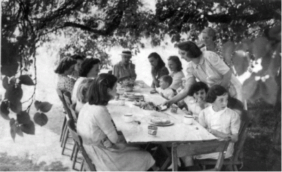
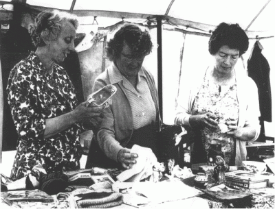

Michael Fitzer
Michael moved with his parents, Hubert and Beatrice (Beaty) and his elder sister, Hazel from Storridge to Little Southend Farm in 1936.He says conditions were primitive, and electricity was not installed till 1952 when they had left. Hubert later became a churchwarden and his name appears on one of the bells which was re-cast. Michael went to Mathon School, first milking a cow, then walking the mile to school. Hazel did the same. Later, Michael attended Cradley School, then Ledbury Grammar. Two more cows waited to be milked when he got home. There was lots of learning by rote at Mathon School, chanting of multiplication tables, learning by heart, and plasticene modelling. There was a hymn at morning prayers, but no other music, and the only games were the cricket and football they organised for themselves at lunchtime. Discipline was enforced by a slap on the leg, and for more serious offences, the vicar, Mr. Forrest was summoned to cane the offender. At school, they used slates and slate pencils quite frequently, and we both remembered what a terrible noise you could make with a slate pencil if you tried really hard.
Michael, aged 6, helped to drive cattle by road from Southend to Storridge , about 2 miles. He says not many sheep were kept then, but there were many small milking herds, and the milk money was the farmers principal income. Miss Hodges, their neighbour, had a herd of Ayrshires which were milked by Fred Jones. Fred arranged with Hubert to have a 28 gallon barrel of cider kept for his own use, and he paid for it when it was empty. After finishing the milking he came to the Fitzers door, and drank a pint of cider there and took two full quart bottles away with him. By the end of the month he had emptied the barrel. Sometimes in winter, he sat by the fire heating a poker to red and plunged it in the cider to take the chill off
He watched the barrel carefully and one day complained to Beaty that someone had been interfering with it. Beaty denied this, but what she did not know was that a small boy from nearby had been fiddling with the tap, and produced a few drops which he had tasted, and confided to Michael, “I likes cider”
Bath night at the weekend involved taking down the tin bath from the wall where it hung, and heating the water in the boiler. A bucket of hot and a bucket of cold, and you had your bath, Michael first because he was youngest.
Beaty plucked and dressed the poultry and had won prizes for her dressed poultry. She also delivered it to Malvern. Cider-making was Huberts task and also the salting of pigs which were killed when there was an R in the month, never in the warmer weather. Michael grew up, like most farmers sons with the sounds and sights of pig-killing. Then there were the great feasts, shared with neighbours who had sent them meat when they had killed their pig., the making of 3 pound pork pies, faggots, black puddings, hams, bacon, roasting joints and all the rest. These pigs realised up to 480 pounds of meat. No wonder sons and daughters working away from home enquired about the pigs health. The pig-killing was done by Jervy Jones, the son of the landlady at the “Cliffe Arms”, but when he was old enough, Michaels job, as Christmas approached was to kill the turkeys.
“The Fitzers gave great parties” but in the family the joke was that as soon as the first guests arrived the order was given “Cover the milk” The ceilings were whitewashed and when a large number of people began walking about or dancing, flakes fell into the open vessels in the dairy, unless the milk was covered.
The agricultural wage at that time was 30shillings (£1. 50) per week and although there were opportunities to supplement this, they too were poorly paid. Beaty was an expert hop-picker but two hours work, filling five big baskets was only worth one shilling (5p)
Little Southend had its own well observed, but friendly ghost. Michael says “We would be sitting, playing Ludo, or cards, while Mother was out at a meeting, and would hear the sound of footsteps and think she had returned, but nobody came in” Kath Blood, a neighbour, says “Light tapping footsteps going along the lane” Everyone who encountered her agrees that there was nothing malevolent about this ghost. When an uncle was staying he claimed that she appeared in the room where he was sleeping, but this seems to have been her final appearance.
The family moved to Hoe Farm in 1951, and Michael stayed in farming until his early thirties, but then deciding there was not much future in small farms went to work in a plastics factory in Malvern Link.

Tea Party at Mathon Court - Beaty Fitzer standing, Mrs. Thorburn at the far end of the table.

Beaty Fitzer , Gladys Daw, and an unknown lady run a fund-raising stall at Mathon Gymkhana. Beaty was a marvellous saleswoman. When you looked at her stall, you thought nobody would buy that lot, but at the end it had gone. Much to your surprise, you had probably bought something yourself.
- Printer-friendly version
- Login to post comments